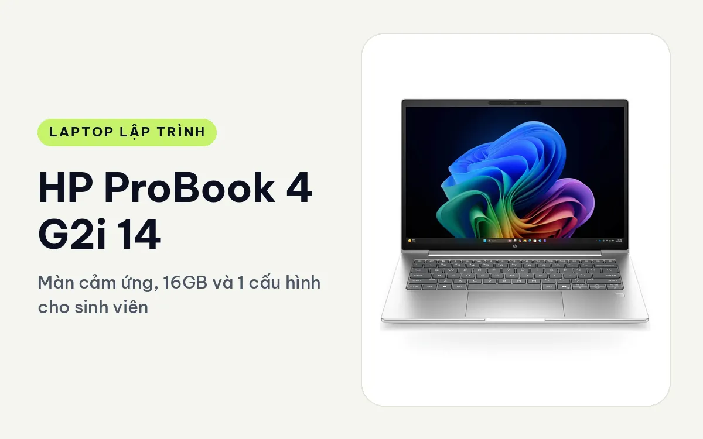
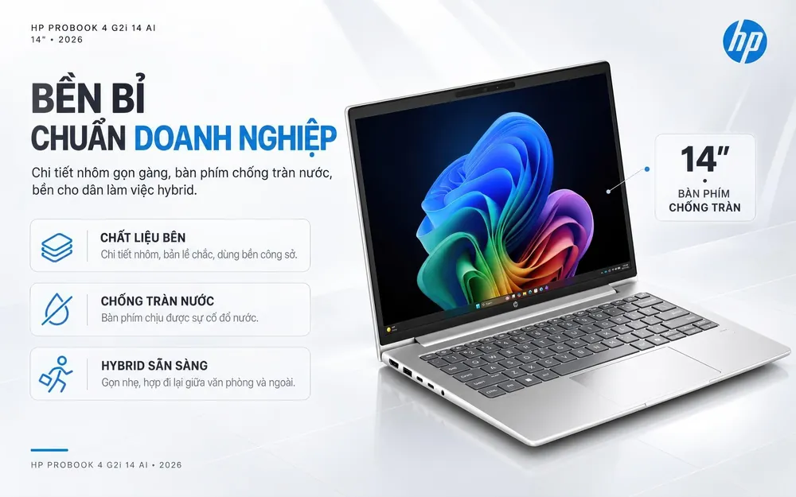
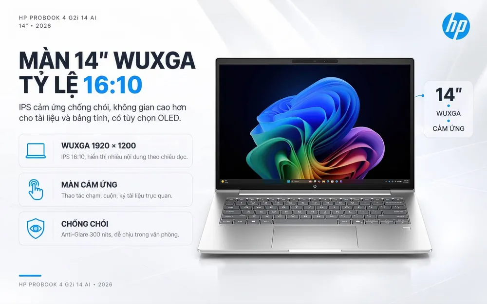
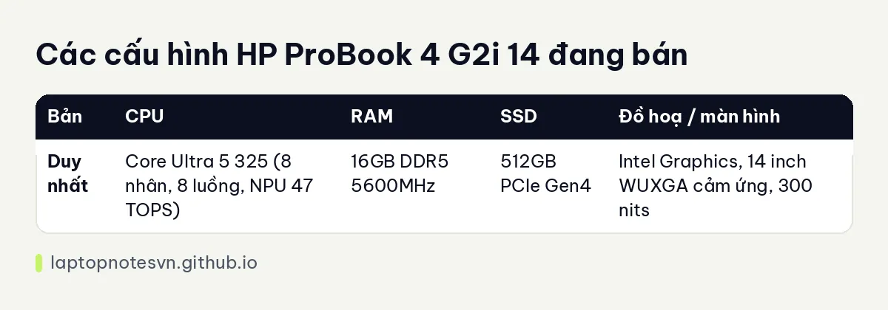

HP ProBook 4 G2i 14 cho lập trình - Màn cảm ứng, 16GB và 1 cấu hình cho sinh viên

Nếu bạn là sinh viên công nghệ hoặc đang tự học code, HP ProBook 4 G2i 14 AI (2026) là loại máy văn phòng doanh nghiệp có giá dễ chịu hơn dòng EliteBook. Nó không mạnh, nhưng làm đúng việc: bàn phím tốt, màn 16:10 cảm ứng, đủ cổng, và RAM DDR5 có thể thay được ở một số phiên bản.
Cửa hàng đang bán 1 cấu hình, kèm chip Core Ultra 5 325, 16GB RAM và 512GB SSD. Dưới đây là phần nói thật về việc code trên máy này ra sao.
Thiết kế gọn, ít màu mè
Tổng thể tối giản với các chi tiết nhôm, bố trí cổng hợp lý, hướng tới người làm việc hybrid. Dòng ProBook 4 G2i có hai cỡ 14 inch và 16 inch, bản 14 inch gọn hơn và phù hợp cầm theo. Bàn phím có đèn nền, phím chống tràn nước, bản lề chắc. Với sinh viên hay làm bài cạnh ly nước, chi tiết chống tràn là điểm cộng thực tế.

Màn hình 14 inch WUXGA (1920 x 1200), IPS, 16:10, cảm ứng đa điểm, chống chói, 300 nits, 62,5% sRGB. Màn cảm ứng khá hiếm ở tầm giá này, tiện khi đọc tài liệu hoặc ghi chú bằng tay trên Windows 11. Bù lại, độ phủ màu ở mức phổ thông, nên nếu làm UI cần màu chuẩn thì bạn phải xem thêm màn rời.
Cổng gồm 2 USB-C 3.2 Gen 2x2 (20Gbps, có sạc Power Delivery và xuất hình DisplayPort 1.4), 2 USB-A 3.2 Gen 1, HDMI 2.1 và jack 3,5mm. Mạng không dây là Wi-Fi 6E và Bluetooth 5.3. Camera 5MP hồng ngoại có tính năng AI cho họp trực tuyến, và có cảm biến vân tay.
Đi học, đi làm mỗi ngày
Trang sản phẩm không ghi cân nặng hay độ dày cụ thể của bản 14 inch, nên bài này không đưa số. Trang sản phẩm nhấn mạnh máy gọn, dễ mang theo hằng ngày, và bộ sạc đi kèm là loại 65W USB-C GaN nhỏ gọn. Bạn nên hỏi cửa hàng cân nặng thực tế nếu đó là yếu tố quyết định.

Pin HP Long-life đủ cho một ngày làm việc theo trang sản phẩm nhưng không có số Wh hay số giờ chính thức. Công nghệ HP Fast Charge nạp khoảng 50% trong 30 phút. Với sinh viên, đây là kiểu máy mang lên giảng đường, cắm sạc ở thư viện, rồi về nhà nối màn hình rời qua HDMI.
Có 1 cấu hình đang bán
| Bản | CPU | RAM | SSD | Đồ hoạ / màn hình |
|---|---|---|---|---|
| Duy nhất | Core Ultra 5 325 (8 nhân, 8 luồng, NPU 47 TOPS) | 16GB DDR5 5600MHz | 512GB PCIe Gen4 | Intel Graphics, 14 inch WUXGA cảm ứng, 300 nits |
Trang sản phẩm còn nhắc đến phiên bản dùng Core Ultra 7 355, RAM tới 32GB và màn OLED, nhưng bản đang bán tại cửa hàng không phải các cấu hình đó. Nếu bạn quan tâm, hãy hỏi trực tiếp cửa hàng về khả năng đặt riêng.

Bản Core Ultra 5 325, 16GB, 512GB, màn cảm ứng
Dân học code là đối tượng phù hợp nhất. Học Python, C, Java, JavaScript, làm bài tập thuật toán, viết đồ án web với Node hoặc Laravel, tất cả đều nằm trong khả năng của chip 8 nhân này. Chạy VS Code, trình duyệt, một database như PostgreSQL hoặc MySQL cục bộ cùng lúc đều thoải mái với 16GB.
Docker ở mức nhẹ cũng làm được: một ứng dụng với database và cache. Còn khi bạn bật nhiều container, thêm máy ảo hoặc Android emulator thì RAM sẽ thành nút thắt, vì đồ hoạ tích hợp cũng dùng chung bộ nhớ hệ thống. Huấn luyện mô hình sâu không phù hợp, vì máy không có GPU rời. Bạn vẫn học được machine learning cơ bản với scikit-learn hoặc chạy notebook nhỏ, và dùng Google Colab khi cần GPU.
Ổ cứng M.2 2280 PCIe 4.0 có thể thay khi đầy, và theo trang sản phẩm RAM có phiên bản lên 32GB. Tuy vậy bạn nên kiểm tra kỹ với cửa hàng cho đúng mã máy trước khi tính chuyện nâng cấp, vì trang sản phẩm nói khả năng này tuỳ phiên bản.
Chọn máy này khi nào
Hãy chọn ProBook 4 G2i 14 nếu bạn đang học hoặc mới đi làm, ngân sách vừa phải, cần màn cảm ứng và bàn phím chống tràn. Nó hợp với web, script, ứng dụng desktop nhỏ, thực hành cơ sở dữ liệu. Nếu bạn muốn thân máy nhôm nhẹ hơn, Wi-Fi 7 và hai cổng Thunderbolt 4 để dùng dock, xem bài HP EliteBook 8 G2i 14. Cần biết 16GB có đủ cho mình hay không thì đọc bài về RAM cho lập trình viên.
Xem hàng tại trang HP ProBook 4 G2i 14 AI.
Đăng ngày 08/11/2026